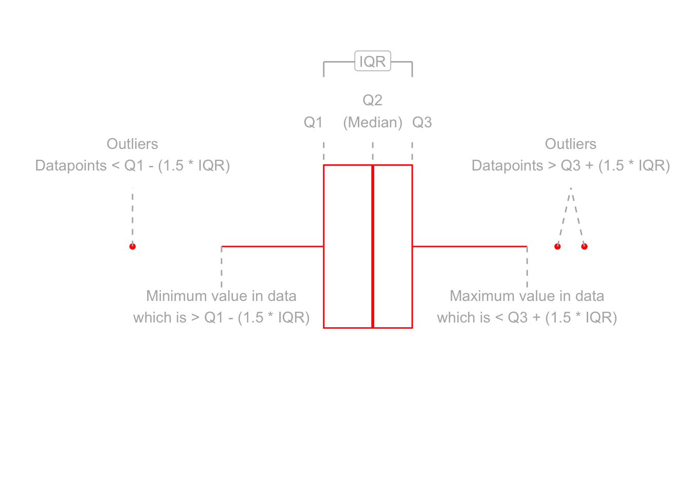

In the previous week, we looked into describing and visualising categorical data. We looked at using the mode and median as measures of central tendency, before discussing how for ordered categorical data we could look at the quartiles (the points in rank-ordered data below which falls 25%, 50%, 75% and 100% of the data) to gain an understanding of how spread out the data are.
We now move to looking at measures of central tendency and of spread for numeric data.
2 Central tendency
In the following examples, we are going to use some data on 120 participants’ IQ scores (measured on the Wechsler Adult Intelligence Scale (WAIS)), their ages, and their scores on 2 other tests.
It is available at https://uoepsy.github.io/data/wechsler.csv
participant iq age test1
Length:120 Min. : 58.00 Min. :20.00 Min. :30.00
Class :character 1st Qu.: 88.00 1st Qu.:29.50 1st Qu.:45.75
Mode :character Median :100.50 Median :37.00 Median :49.00
Mean : 99.33 Mean :36.63 Mean :49.33
3rd Qu.:109.00 3rd Qu.:44.00 3rd Qu.:53.25
Max. :137.00 Max. :71.00 Max. :67.00
test2
Min. : 2.00
1st Qu.:42.00
Median :52.50
Mean :51.24
3rd Qu.:62.00
Max. :80.00
Mode and median revisited
We saw for categorical data two different measures of central tendency:
Mode: The most frequent value (the value that occurs the greatest number of times).
Median: The value for which 50% of observations a lower and 50% are higher. It is the mid-point of the values when they are rank-ordered.
We applied both of these to categorical data, but we can also use them for numeric data.
Mode
Median
Mean
Nominal (unordered categorical)
✔
✘
✘
Ordinal (ordered categorical)
✔
✔
? (you may see it sometimes for certain types of ordinal data - there’s no consensus)
Numeric Continuous
✔
✔
✔
The mode of numeric variables is not frequently used. Unlike categorical variables where there are a distinct set of possible values which the data can take, for numeric variables, data can take a many more (or infinitely many) different values. Finding the “most common” is sometimes not possible.
The most frequent value (the mode) of the iq variable is 97:
# take the "wechsler" dataframe |># count() the values in the "iq" variable (creates an "n" column), and# from there, arrange() the data so that the "n" column is descending - desc()wechsler|>count(iq)|>arrange(desc(n))
Recall that the median is found by ordering the data from lowest to highest, and finding the mid-point. In the wechsler dataset we have IQ scores for 120 participants. We find the median by ranking them from lowest to highest IQ, and finding the mid-point between the \(60^{th}\) and \(61^{st}\) participants’ scores.
We can also use the median() function with which we are already familiar:
One of the most frequently used measures of central tendency for numeric data is the mean.
Mean:\(\bar{x}\)
The mean is calculated by summing all of the observations together and then dividing by the total number of obervations (\(n\)).
When we have sampled some data, we denote the mean of our sample with the symbol \(\bar{x}\) (sometimes referred to as “x bar”). The equation for the mean is:
This might be the first mathematical formula you have seen in a while, so let’s unpack it.
The \(\sum\) symbol is used to denote a series of additions - a “summation”.
When we include the bits around it: \(\sum\limits_{i = 1}^{n}x_i\) we are indicating that we add together all the terms \(x_i\) for values of \(i\) between \(1\) and \(n\): \[\sum\limits_{i = 1}^{n}x_i \qquad = \qquad x_1+x_2+x_3+...+x_n\]
So in order to calculate the mean, we do the summation (adding together) of all the values from the \(1^{st}\) to the \(n^{th}\) (where \(n\) is the total number of values), and we divide that by \(n\).
Samples and populations
Statistics is all about drawing inferences from some sampled data about the larger population from which it is sampled.
A statistic which we calculate from our sample provides us with an estimate of something in the population (for instance, we might take the average age of students at Edinburgh University as an estimate of the age of all students).
Because of this, statisticians have different notations for when we are talking about populations vs talking about samples:
Functions such as mean(), median(), min() and max() can quickly summarise data, and we can use them together really easily in combination with summarise().
summarise()
The summarise() function is used to reduce variables down to a single summary value.
# take the data |># summarise() it, such that there is a value called "summary_value", which# is the sum() of "variable1" column, and a value called # "summary_value2" which is the mean() of the "variable2" column.data|>summarise( summary_value =sum(variable1), summary_value2 =mean(variable2))
Note: Just like with mutate() we don’t have to keep using the dollar sign $, as we have already told it what dataframe to look for the variables in.
So if we want to show the mean IQ score and the mean age of our participants:
# take the "wechsler" dataframe |># summarise() it, such that there is a value called "mean_iq", which# is the mean() of the "iq" variable, and a value called # "mean_age" which is the mean() of the "age" variable. wechsler|>summarise( mean_iq =mean(iq), mean_age =mean(age))
If we are using the median as our measure of central tendency and we want to discuss how spread out the spread are around it, then we will want to use quartiles (recall that these are linked: the \(2^{nd}\) quartile = the median).
We have already briefly introduced how for ordinal data, the 1st and 3rd quartiles give us information about how spread out the data are across the possible response categories. For numeric data, we can likewise find the 1st and 3rd quartiles in the same way - we rank-order all the data, and find the point at which 25% and 75% of the data falls below.
The difference between the 1st and 3rd quartiles is known as the interquartile range (IQR). ( Note, we couldn’t take the difference for ordinal data, because “difference” would not be quantifiable - the categories are ordered, but intervals are between categories are unknown)
Alternatively, we can use this inside summarise():
# take the "wechsler" dataframe |># summarise() it, such that there is a value called "median_age", which# is the median() of the "age" variable, and a value called "iqr_age", which# is the IQR() of the "age" variable.wechsler|>summarise( median_age =median(age), iqr_age =IQR(age))
If we are using the mean as our as our measure of central tendency, we can think of the spread of the data in terms of the deviations (distances from each value to the mean).
Recall that the mean is denoted by \(\bar{x}\). If we use \(x_i\) to denote the \(i^{th}\) value of \(x\), then we can denote deviation for \(x_i\) as \(x_i - \bar{x}\).
The deviations can be visualised by the red lines in Figure @ref(fig:deviations).
Deviations from the mean
The sum of the deviations from the mean, \(x_i - \bar x\), is always zero
\[
\sum\limits_{i = 1}^{n} (x_i - \bar{x}) = 0
\]
The mean is like a center of gravity - the sum of the positive deviations (where \(x_i > \bar{x}\)) is equal to the sum of the negative deviations (where \(x_i < \bar{x}\)).
Because deviations around the mean always sum to zero, in order to express how spread out the data are around the mean, we must we consider squared deviations.
Squaring the deviations makes them all positive. Observations far away from the mean in either direction will have large, positive squared deviations. The average squared deviation is known as the variance, and denoted by \(s^2\)
Variance:\(s^2\)
The variance is calculated as the average of the squared deviations from the mean.
When we have sampled some data, we denote the mean of our sample with the symbol \(\bar{x}\) (sometimes referred to as “x bar”). The equation for the variance is:
The top part of the equation \(\sum\limits_{i=1}^{n}(x_i - \bar{x})^2\) can be expressed in \(n-1\) terms, so we divide by \(n-1\) to get the average.
Example: If we only have two observations \(x_1\) and \(x_2\), then we can write out the formula for variance in full quite easily. The top part of the equation would be: \[
\sum\limits_{i=1}^{2}(x_i - \bar{x})^2 \qquad = \qquad (x_1 - \bar{x})^2 + (x_2 - \bar{x})^2
\]
The mean for only two observations can be expressed as \(\bar{x} = \frac{x_1 + x_2}{2}\), so we can substitute this in to the formula above. \[
(x_1 - \bar{x})^2 + (x_2 - \bar{x})^2 \qquad = \qquad \left(x_1 - \frac{x_1 + x_2}{2}\right)^2 + \left(x_2 - \frac{x_1 + x_2}{2}\right)^2
\] Which simplifies down to one value: \[
\left(x_1 - \frac{x_1 + x_2}{2}\right)^2 + \left(x_2 - \frac{x_1 + x_2}{2}\right)^2 \qquad = \qquad \left(\frac{x_1 - x_2}{\sqrt{2}}\right)^2
\] So although we have \(n=2\) datapoints (\(x_1\) and \(x_2\)), the top part of the equation for the variance has only 1 (\(n-1\)) units of information. In order to take the average of these bits of information, we divide by \(n-1\).
We can get R to calculate this for us using the var() function:
One difficulty in interpreting variance as a measure of spread is that it is in units of squared deviations. It relects the typical squared distance from a value to the mean.
Conveniently, by taking the square root of the variance, we can translate the measure back into the units of our original variable. This is known as the standard deviation.
Standard Deviation:\(s\)
The standard deviation, denoted by \(s\), is a rough estimate of the typical distance from a value to the mean.
It is the square root of the variance (the typical squared distance from a value to the mean).
\[
s = \sqrt{\frac{\sum\limits_{i=1}^{n}(x_i - \bar{x})^2}{n-1}}
\]
We can get R to calculate the standard deviation of a variable sd() function:
Boxplots provide a useful way of visualising the interquartile range (IQR). You can see what each part of the boxplot represents in Figure @ref(fig:boxplotdesc).

Anatomy of a boxplot
We can create a boxplot of our age variable using the following code:
# Notice, we put age on the x axis, making the box plot vertical. # If we had set aes(y = age) instead, then it would simply be rotated 90 degrees ggplot(data =wechsler, aes(x =age))+geom_boxplot()
Histograms
Now that we have learned about the different measures of central tendency and of spread, we can look at how these influence visualisations of numeric variables.
We can visualise numeric data using a histogram, which shows the frequency of values which fall within bins of an equal width.
# make a ggplot with the "wechsler" data. # on the x axis put the possible values in the "iq" variable,# add a histogram geom (will add bars representing the count # in each bin of the variable on the x-axis)ggplot(data =wechsler, aes(x =iq))+geom_histogram()
Tests 1 and 2 have similar means (around 50), but the standard deviation of Test 2 is almost double that of Test 1. We can see this distinction in the visualisation below - the histograms are centered at around the same point (50), but the one for Test 2 is a lot wider than that for Test 1.
Density curves
In addition to grouping numeric data into bins in order to produce a histogram, we can also visualise a density curve.
For the time being, you can think of the density as a bit similar to the notion of relative frequency, in that for a density curve, the values on the y-axis are scaled so that the total area under the curve is equal to 1. Because there are infinitely many values that numeric variables could take (e.g., 50, 50.1, 50.01, 5.001, …), we could group the data into infinitely many bins. In creating a curve for which the total area underneath is equal to one, we can use the area under the curve in a range of values to indicate the proportion of values in that range.
Skewness is a measure of asymmetry in a distribution. Distributions can be positively skewed or negatively skewed, and this influences our measures of central tendency and of spread to different degrees (see Figure @ref(fig:skewplot)).
Skew influences the mean and median to different degrees.
6 Glossary
Interquartile Range (IQR): The \(3^{rd}\) quartile minus the \(1^{st}\) quartile.
Mean: The sum of all observations divided by the total number of observations. The center of gravity of a variable.
Deviation: The distance from an observation to the mean value.
Variance: The average squared distance from observations to the mean value.
Standard deviation: Square root of variance - can be thought of as the average distance from observations to the mean value.
Boxplot: Displays the median and the IQR, and any extreme values.
Histogram: Shows the frequency of values which fall within bins of an equal width.
Density curve: A curve for reflecting the distribution of a variable, for which the area under the curve sums to 1.
Skew: A measure of asymmetry in a distribution.
summarise() To summarise variables into a single value according to whatever calculation we give it.
IQR() To calculate the interquartile range for a given variable.